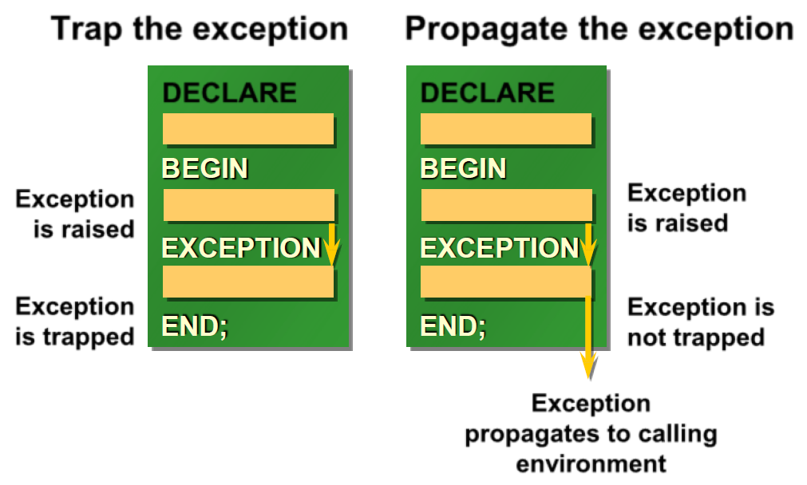
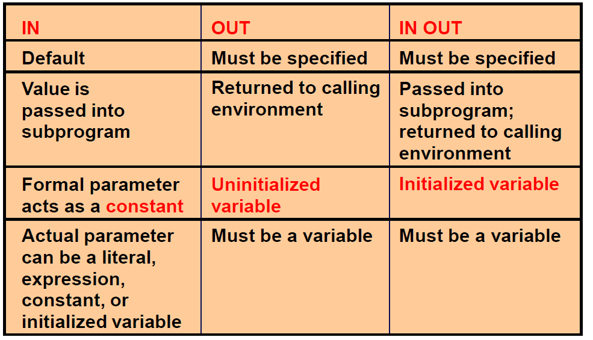
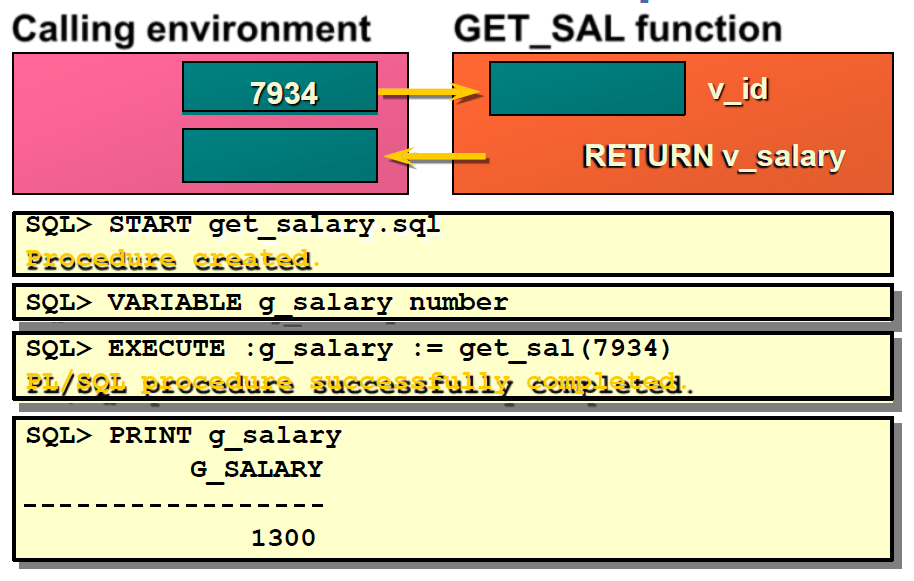

Exceptions

Handling Exceptions:
- Trap the exception: Exception is raised and trapped within DECLARE, BEGIN, EXCEPTION, END block.
- Propagate the exception: Exception is raised, not trapped, and propagates to calling environment.
Exception Types:
- Predefined Oracle Server: Implicitly raised
- Non-predefined Oracle Server: Implicitly raised
- User-defined: Explicitly raised
Trapping Exceptions Guidelines:
- WHEN OTHERS is the last clause.
- EXCEPTION keyword starts exception-handling section.
- Several exception handlers are allowed.
- Only one handler is processed before leaving the block.
- Reference the standard name in the exception-handling routine.
- Sample predefined exceptions:
- NO_DATA_FOUND
- TOO_MANY_ROWS
- INVALID_CURSOR
- ZERO_DIVIDE
- DUP_VAL_ON_INDEX
set serveroutput on
DECLARE
except1 EXCEPTION;
PRAGMA exception_init(except1, -20000);
BEGIN
raise_application_error('-20001', 'except2'); -- comment this line
RAISE except1; -- then comment this line too
DECLARE
V NUMBER := 1/0; -- finally change it to 1/1
BEGIN
V := 1/0;
EXCEPTION
WHEN OTHERS THEN dbms_output.put_line('inner block');
END;
EXCEPTION
WHEN OTHERS THEN dbms_output.put_line(SQLCODE||' ~~~ '||sqlerrm);
END;
/
Results: ---------- first output: -20001 ~~~ ORA-20001: except2 second output: -20000 ~~~ ORA-20000: third output: -1476 ~~~ ORA-01476: division by zero fourth output: inner block
Trapping Non-Predefined Oracle Server Errors:
- Declare: Name the exception (Declarative section)
- Associate: Code the PRAGMA EXCEPTION_INIT
- Reference: Handle the raised exception (Exception-handling section)
Trapping User-Defined Exceptions:
- Declare: Name the exception (Declarative section)
- Raise: Explicitly raise the exception by using the RAISE statement (Executable section)
- Reference: Handle the raised exception (Exception-handling section)
Functions for Trapping Exceptions:
- SQLCODE: Returns the numeric value for the error code
- SQLERRM: Returns the message associated with the error number
/* Raising an error from a subprogram */
DECLARE
v1 NUMBER :=0;
FUNCTION f1 RETURN NUMBER IS
except1 EXCEPTION;
BEGIN
raise except1; -- comment this line
raise_application_error('-20000', 'exception1'); -- finally comment this too
RETURN 10;
EXCEPTION
WHEN except1 THEN RETURN 20;
WHEN OTHERS THEN RETURN 30; -- then comment this too
END f1;
BEGIN
v1 := f1; dbms_output.put_line(v1);
EXCEPTION
WHEN OTHERS THEN dbms_output.put_line(SQLCODE||' ~~~ '||sqlerrm);
END;
/
Results: ------------ first output: 20 second output: 30 third output: -20000 ~~~ ORA-20000: exception1 fourth output: 10
Calling Environments:
- SQL*Plus: Displays error number and message to screen
- Sql Developer: Displays error number and message to screen
- Oracle Developer Forms: Accesses error number and message in a trigger by means of the ERROR_CODE and ERROR_TEXT packaged functions
- Precompiler application: Accesses exception number through the SQLCA data structure
- An enclosing PL/SQL block: Traps exception in exception-handling routine of enclosing block
RAISE_APPLICATION_ERROR Procedure:
- A procedure that lets you issue user-defined error messages from stored subprograms
- Called only from an executing stored subprogram
Predefined exceptions
SELECT text FROM all_source WHERE type = 'PACKAGE'
AND name = 'STANDARD' AND lower(text) LIKE '%exception_init%';
Put comments before some statements (or delete comments) to test other exceptions.
SET SERVEROUTPUT ON
BEGIN -- 3 nested blocks
DECLARE
v1 emp.sal%TYPE;
v2 emp.comm%TYPE;
v3 INTEGER := 0;
BEGIN
v3 := 1/v3; -- comment this second
BEGIN
SELECT sal, comm INTO v1, v2 FROM emp WHERE ename LIKE 'S%'; -- then change it to 'X%'
EXCEPTION
WHEN too_many_rows THEN
BEGIN
v1 := 1; v2 := 2;
END;
END;
dbms_output.put_line(to_char(v1)||' -- '|| nvl(to_char(v2), 'null'));
EXCEPTION
WHEN zero_divide THEN dbms_output.put_line('zero divide'); -- comment this first
WHEN too_many_rows THEN dbms_output.put_line('too many rows');
END;
dbms_output.put_line('main program');
EXCEPTION
WHEN OTHERS THEN dbms_output.put_line(SQLCODE || ' -- ' || sqlerrm);
END;
/
Results:
-----------
first output: zero divide
main program
second output: -1476 -- ORA-01476: division by zero
third output: 1 -- 2 too many rows handled
main program
fourth output: 100 -- ORA-01403: No Data found
-- put comments before the first 5 lines one by one to test other exceptions
set serveroutput on
DECLARE
v_nev VARCHAR2(20);
v_szam NUMBER := 0;
CURSOR emp_cur IS SELECT ename FROM emp;
error1 EXCEPTION;
pragma EXCEPTION_INIT(error1, -20001);
error2 EXCEPTION;
pragma EXCEPTION_INIT(error2, -20002);
PROCEDURE err_proc(v NUMBER) IS
BEGIN
IF MOD(v, 2) = 0 THEN
RAISE_APPLICATION_ERROR('-20001', 'error1');
ELSE
RAISE_APPLICATION_ERROR('-20002', 'error2');
END IF;
END;
BEGIN
err_proc(1); -- error2
err_proc(2); -- error1
v_szam := 1/v_szam; -- zero divide
SELECT ename INTO v_nev FROM emp WHERE empno < 0; -- no_data found
SELECT ename INTO v_nev FROM emp WHERE empno > 0; -- too_many_rows
OPEN emp_cur;
LOOP
FETCH emp_cur INTO v_nev;
EXIT WHEN emp_cur%notfound;
dbms_output.put(v_nev||' -> ');
dbms_output.put_line(to_char(emp_cur%rowcount));
END LOOP;
CLOSE emp_cur;
EXCEPTION
WHEN error1 THEN
dbms_output.put_line('error1 occured');
WHEN error2 THEN
dbms_output.put_line('error2 occured');
WHEN zero_divide THEN
dbms_output.put_line('zero divide error');
WHEN no_data_found THEN
dbms_output.put_line('No Data Found error');
WHEN too_many_rows THEN
dbms_output.put_line('Too many rows error');
WHEN OTHERS THEN
dbms_output.put_line('something else ...');
END;
/
Functions and procedures
Procedural Parameter Modes


IN Parameters
7369 ↔ v_id
CREATE OR REPLACE PROCEDURE raise_salary
(v_id in emp.empno%TYPE)
IS
BEGIN
UPDATE emp
SET sal = sal * 1.10
WHERE empno = v_id;
END raise_salary;
/
Procedure created.
SQL> EXECUTE raise_salary (7369)
PL/SQL procedure successfully completed.
OUT Parameters
Calling environment
654 ↔ v_id ↔ v_name ↔ v_salary ↔ v_comm
QUERY_EMP procedure
v_id, MARTIN v_name, 1250 v_salary, 1400 v_comm
CREATE OR REPLACE PROCEDURE query_emp
(v_id IN emp.empno%TYPE,
v_name OUT emp.ename%TYPE,
v_salary OUT emp.sal%TYPE,
v_comm OUT emp.comm%TYPE)
IS
BEGIN
SELECT ename, sal, comm
INTO v_name, v_salary, v_comm
FROM emp
WHERE empno = v_id;
END query_emp;
/
IN OUT Parameters
Calling environment
'(800)633-0575' ↔ v_phone_no
FORMAT_PHONE procedure
'(800)633-0575' v_phone_no
CREATE OR REPLACE PROCEDURE format_phone
(v_phone_no IN OUT VARCHAR2)
IS
BEGIN
v_phone_no := '(' || SUBSTR(v_phone_no,1,3) || ')'
|| SUBSTR(v_phone_no,4,3) || '-'
|| SUBSTR(v_phone_no,7);
END format_phone;
/
-- Some simple examples for PL/SQL functions and procedures
-- These are local (not stored) subprograms
DECLARE
num number(6);
FUNCTION func_plus_1(num number) RETURN number IS
v NUMBER(6);
BEGIN
v := num + 1;
return(v);
END;
PROCEDURE proc_plus_1(num number) is
v NUMBER(6);
BEGIN
v := num + 1;
dbms_output.put_line(TO_CHAR(v));
END;
BEGIN
num := func_plus_1(100);
proc_plus_1(num);
END;
/
Results: ------- 102
-- These are stored (in the database) subprograms, we can call them later at any time.
CREATE OR REPLACE FUNCTION func_plus_2(num number) RETURN number IS
v NUMBER(6);
BEGIN
v := num + 2;
return(v);
END;
/
-- We can call the function from within SQL
SELECT func_plus_2(1000) FROM dual;
CREATE OR REPLACE PROCEDURE proc_plus_2(num number) is
v NUMBER(6);
BEGIN
v := num + 2;
dbms_output.put_line(TO_CHAR(v));
END;
/
-- We can call the procedure
CALL proc_plus_2(2000);
-- Or equivalently
EXECUTE proc_plus_2(2000);
-- subprogram without parameter
set serveroutput on
DECLARE
num number(6) := 1;
PROCEDURE pr1 is -- don't use paranthesis!
v NUMBER(6);
BEGIN
v := num + 1;
dbms_output.put_line(TO_CHAR(v));
END;
BEGIN
pr1(); -- you can use paranthesis, but pr1 is ok too
END;
/
Examples of Passing Parameters
begin
add_dept(('TRAINING', 'NEW YORK'));
add_dept(v_loc => 'DALLAS', v_name =>'EDUCATION');
add_dept(v_loc => 'BOSTON');
end;
/
/******* overloading ******/
set serveroutput on
DECLARE
PROCEDURE proc1(p IN NUMBER) IS
BEGIN
DBMS_OUTPUT.PUT_LINE('number param');
END;
PROCEDURE proc1(p IN VARCHAR2) IS
BEGIN
DBMS_OUTPUT.PUT_LINE('varchar2 param');
END;
BEGIN
proc1(100);
proc1('100');
END;
/
Results: --------- number param varchar2 param
/****************** forward declaration ****************/
set serveroutput on
DECLARE
PROCEDURE proc2(p IN NUMBER);
PROCEDURE proc1(p IN NUMBER) IS
BEGIN
IF p < 10 THEN DBMS_OUTPUT.PUT_LINE(p); proc2(p+1); END IF;
END;
PROCEDURE proc2(p IN NUMBER) IS
BEGIN
IF p < 10 THEN DBMS_OUTPUT.PUT_LINE(p); proc1(p*2); END IF;
END;
BEGIN
proc1(0);
END;
/
Results: --------- 0; 1; 2; 3; 6; 7;
Executing Functions
- Invoke a function as part of a PL/SQL expression.
- Create a host variable to hold the returned value.
- Execute the function. The host variable will be populated by the RETURN value.
Executing Functions in SQL*Plus

-- return value of a function as a default parameter of a procedure
set serveroutput on
DECLARE
cnt pls_integer := 0;
FUNCTION dflt RETURN pls_integer IS
BEGIN
cnt := cnt + 1; -- changes global variable cnt
RETURN 42;
END dflt;
PROCEDURE p (i IN pls_integer := dflt() ) IS -- side effect if parameter is not provided
BEGIN
DBMS_Output.Put_Line(i);
END p;
BEGIN
FOR j IN 1..3 LOOP
p(j); -- Actual parameter is provided, no function call
END loop;
DBMS_Output.Put_Line('cnt: '||cnt);
p(); -- Actual parameter is not provided, function call, side effect
DBMS_Output.Put_Line('cnt: '||cnt);
END;
/
Result: --------- 1 2 3 Cnt: 0 42 Cnt: 1
Calling Functions from SQL Expressions: Restrictions
- A user-defined function must be a stored function.
- A user-defined function must be a ROW function, not a GROUP function.
- A user-defined function only takes IN parameters, not OUT, or IN OUT.
- Datatypes must be CHAR, DATE, or NUMBER, not PL/SQL types such as BOOLEAN, RECORD, or TABLE.
- Return type must be an Oracle Server internal type.
- INSERT, UPDATE, or DELETE commands are not allowed.
- Calls to subprograms that break the above restriction are not allowed.
Procedure or Function?

| Procedure | Function |
|---|---|
| Execute as a PL/SQL statement | Invoke as part of an expression |
| No RETURN datatype | Must contain a RETURN datatype |
| Can return one or more values | Must return a value |